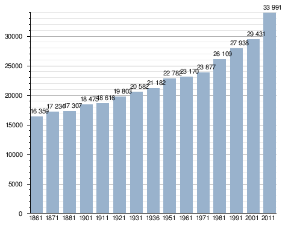

Territorio:
Comune di superficie medio-grande, Osimo si estende su un territorio collinare.
Il suo centro storico sorge su due colline affiancate, la più alta delle quali, su cui sorge il duomo della città, si chiama Gòmero.
L'avvallamento fra le due colline, un tempo visibile nella linea del centro storico, è stato pareggiato sempre più ad ogni rifacimento del manto.
Il terreno è abbastanza fertile e favorisce l'agricoltura. A circa 3 km scorre il fiume Musone.
A poca distanza si trova anche la costa adriatica.
Origine del nome
Attualmente esistono due ipotesi sull'origine del toponimo "Osimo".
Alcuni storici, tra i quali il Grillantini, sostengono che il nome derivi dal termine greco "αὑξάνω", confermato poi dal latino "augeo" e poiché i due verbi hanno il significato di accrescere,
gli studiosi ritengono che Osimo debba significare "accrescimento", intendendo così quel fenomeno per cui una località, grazie alla sua favorevole posizione geografica,
subisce nel tempo uno sviluppo dal punto di vista urbanistico, economico, sociale e culturale.
Simbolo:
Lo stemma della città di Osimo è stato concesso con decreto del presidente della Repubblica dell'8 giugno 2007.
«Di azzurro, al castello di cinque torri, di rosso, mattonato di nero, merlato alla guelfa, le torri ognuna di cinque,
il fastigio di venticinque, la torre centrale più alta e più larga, le torri intermedie di altezza e larghezza mediane,
le torri laterali strette e di minore altezza, la torre centrale finestrata di due in palo, di nero, le altre finestrate di uno,
dello stesso; esso castello chiuso di nero e accompagnato da due leoni illeoparditi d'oro, affrontati, posti in punta. Sotto lo scudo,
su lista bifida e svolazzante di azzurro, il motto, in lettere maiuscole di nero, VETUS AUXIMON. Ornamenti esteriori da Città.»
Evoluzione della società:
Lingua e Dialetti:
Il vernacolo di Osimo fa parte delle parlate della provincia di Ancona connesse con i dialetti umbri centro-settentrionali e con il romanesco
(queste grandi aree formano insieme la cosiddetta fascia perimediana).L'osimano si distingue dall'anconitano per la minore presenza degli
elementi gallo-italici che caratterizzano la parlata del capoluogo. Infatti mentre l'anconitano,
e in parte il perugino, possono essere considerati vernacoli anomali all'interno della loro area,
il dialetto osimano può essere considerato a tutti gli effetti una parlata centrale, in quanto presenta tratti tipici dei dialetti mediani,
come la conservazione delle consonanti doppie e l'assimilazione progressiva ND > NN (es. quando > quanno). Tuttavia,
la particolare mescolanza di forme grammaticali, fonetiche e lessicali di origine diversa che esso mostra,
data la particolare posizione della città come crocevia linguistico fra Ancona, Jesi-Fabriano e Macerata,
fa del dialetto osimano una parlata caratteristica e inconfondibile.
Questo sito web ti spiega la città Osimo,
Se hai bisogno di assistenza entra su
discord! mi raccomando seguitemi in tutti
social! e se vuoi imparare ha programmare
entra su discord.
ps: i loghi che trovate qui di:
twitter e facebook sono in realtà twitter=discord
facebook=twitch